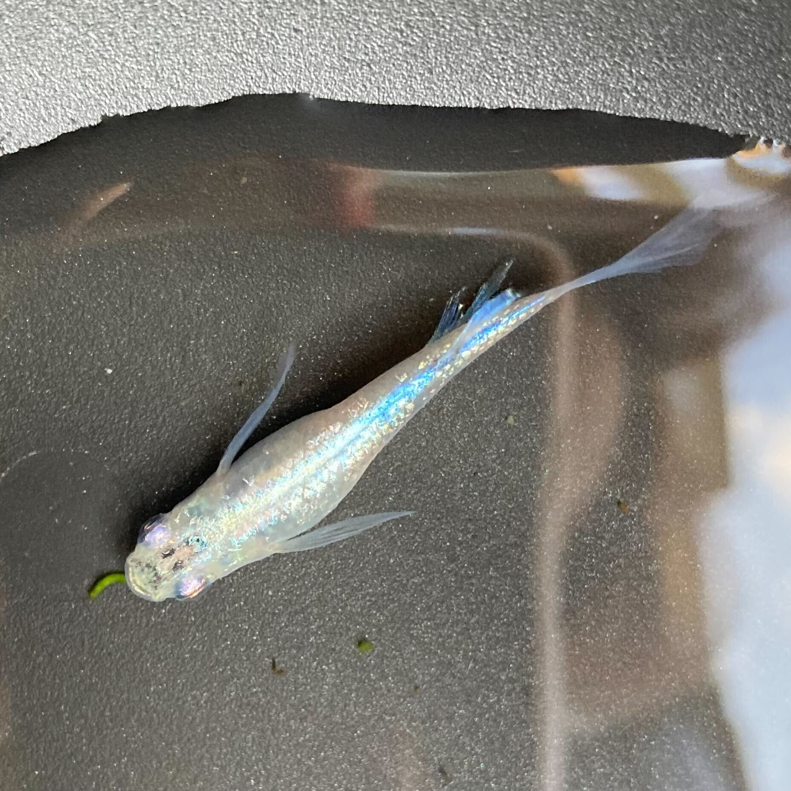

はじめに、わたしの性格は、、、
（せっかちで心配性）です！
次に、最近の趣味は、、、
（３つあります！）
例：主にこちらの３つです。
メダカと麻雀…ラインナップがおじさんっぽいですね。
メダカ飼育
（家の前の池で飼っています。はじめは３匹だったのに今では数え切れないほどいます。）
例：60匹くらいいます。卵から育てて増やすのが好きです。
近々ビオトープを作ろうと思っています。
生き物はかなり好きです。
麻雀

（祖父と従妹が好きなのでよく付き合っています。ちなみにルールは理解していません。）
例：祖母の家でみんなで麻雀したり、雀魂という麻雀ゲームをやったりいろいろやってます。
あんさんぶるスターズ!!
（男性アイドル育成系リズムゲームです。友達に進められてはじめました。）
例：あんさんぶるスターズ!!略してあんスタ。
男性アイドル育成系リズムゲームです。
推しもいます。
その他の特徴は、、、
（中学校から今までずっとギターを弾いています！最近はサボり気味です！）
例：インドア、朝がものすごく苦手、ロングスリーパー etc...